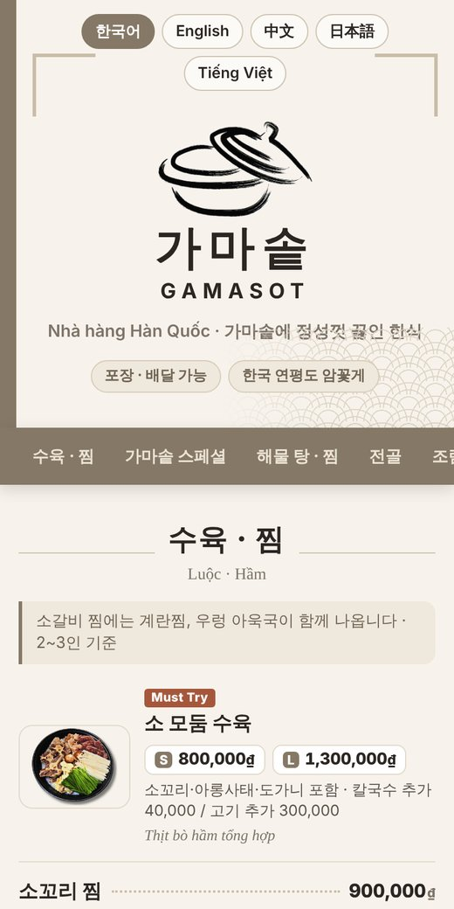
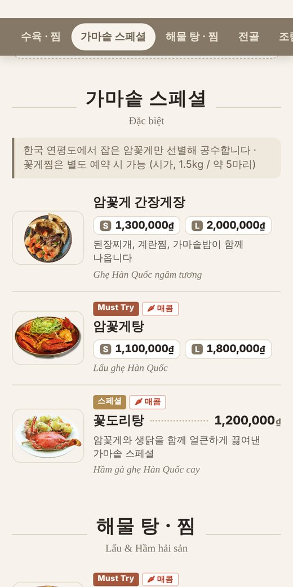
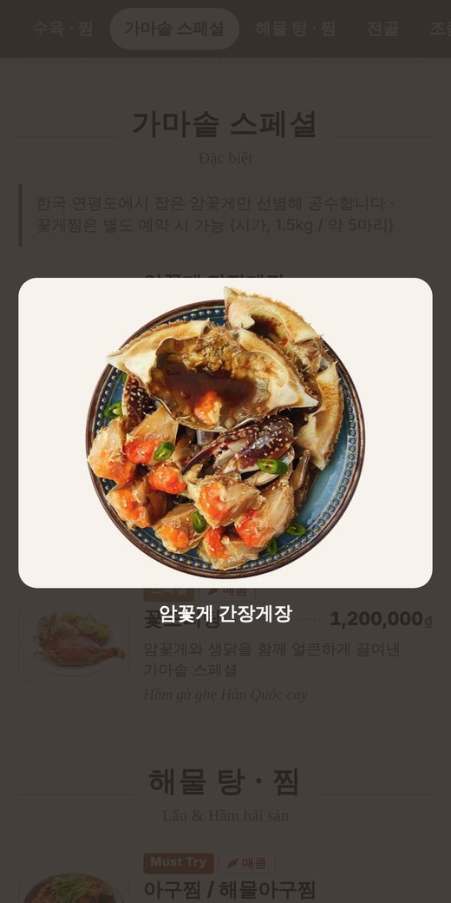
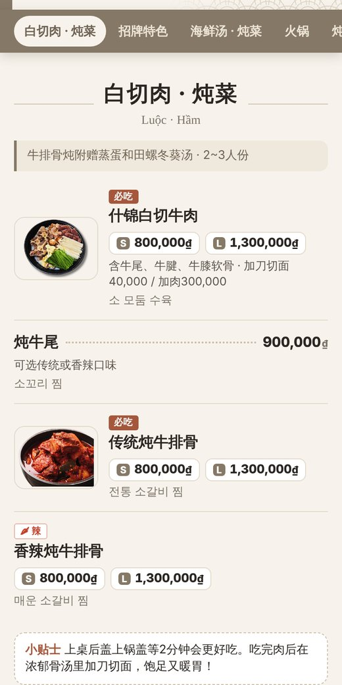
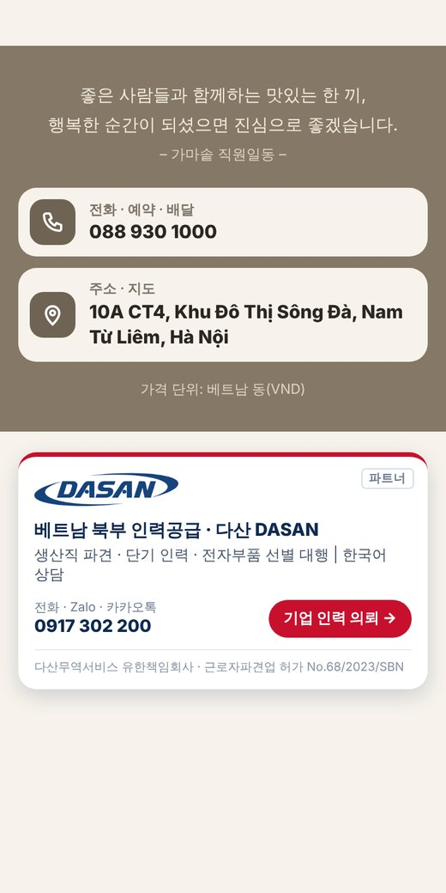

가마솥 QR 메뉴판
활용 가이드
사장님과 직원분들이 메뉴판을 200% 활용하는 방법
gamasot.qrmenuasia.com

찍어서 바로 확인
1손님은 이렇게 봅니다
테이블 QR을 휴대폰 카메라로 찍으면 앱 설치 없이 바로 열립니다. 손님 휴대폰 언어(한국어·베트남어·영어·중국어·일본어)로 자동 표시돼요.

1첫 화면
가마솥 로고와
언어 버튼

2메뉴 · 가격
Must Try·BEST 표시,
S/L 가격, 포함 구성

3사진 크게 보기
사진을 누르면
크게 보여요

4외국어 화면
중국어 손님 화면.
아래에 한국어 이름

5맨 아래
전화·예약·배달,
지도 바로 연결
5개 언어휴대폰 언어 자동 인식
70개 메뉴9개 분류로 정리
사진 33장메뉴판 원본 사진 사용
0원 재인쇄가격이 바뀌어도 QR 그대로
✓종이 메뉴판과 비교하면
| 종이 메뉴판 | QR 메뉴판 |
|---|
| 가격 · 메뉴 변경 | 다시 디자인하고 인쇄 (비용·시간) | 메시지 한 통이면 그날 반영, QR 그대로 |
| 외국인 손님 | 한국어·베트남어만, 직원이 설명 | 5개 언어로 손님이 직접 읽음 |
| 사진 | 지면이 좁아 일부만 | 33장, 누르면 크게 |
| 가게 밖에서 | 매장에 와야 볼 수 있음 | 링크로 Zalo·카톡·SNS 어디든 전달 |
4링크 보내는 법 · 문구 예시
아래 문구를 복사해서 Zalo·카카오톡으로 보내면 됩니다. 주소 끝에 언어를 붙이면 그 언어로 바로 열려요.
| 언어 | 링크 |
|---|
| 자동 (휴대폰 언어) | https://gamasot.qrmenuasia.com |
| 한국어 | https://gamasot.qrmenuasia.com?lang=ko |
| 베트남어 | https://gamasot.qrmenuasia.com?lang=vi |
| 중국어 · 일본어 · 영어 | …?lang=zh · …?lang=ja · …?lang=en |
한국어 · 예약/배달 손님
안녕하세요, 하노이 송다 한식당 가마솥입니다 🍲
메뉴와 사진은 여기서 보실 수 있어요 👇
https://gamasot.qrmenuasia.com?lang=ko
포장·배달·예약: 088 930 1000
베트남어 · Khách Việt
Nhà hàng Hàn Quốc Gamasot xin chào 🍲
Xem thực đơn & hình món ăn tại đây 👇
https://gamasot.qrmenuasia.com?lang=vi
Đặt bàn · mang về · giao hàng: 088 930 1000
5메뉴 수정은 이렇게
| 이럴 때 | 이렇게 하세요 |
|---|
| 가격 변경 · 품절 · 새 메뉴 | 바꿀 내용을 메시지로 보내 주세요 (사진 한 장도 OK). 그날 안에 반영되고 QR은 바뀌지 않아요. |
| 추천 메뉴 바꾸기 | "이번 달은 ○○를 Must Try로" 처럼 알려 주시면 표시를 옮겨 드려요. |
| 음식 사진 교체 · 추가 | 휴대폰으로 찍은 사진을 보내 주세요. 밝은 곳에서 위에서 찍으면 가장 좋아요. |
| 계절 메뉴 · 이벤트 안내 | 기간과 문구를 보내 주시면 메뉴판 상단에 안내를 넣어 드립니다. |
| QR 카드 추가 인쇄 | 받으신 PDF(A6 1장 / A4에 4장)를 인쇄소에 맡기세요. 무광 코팅하면 더 잘 찍힙니다. |
6사장님 확인 부탁드려요
- 와이파이 이름 · 비밀번호 (메뉴판에 넣을지)
- 영업시간 · 휴무일
- 구글 지도 가게 링크
- 보신 전골/수육: 외국어 화면에도 보여 줄지
- 사진과 메뉴 짝이 맞는지 (흑염소 전골, 아구지리, 냉이된장국, 도가니탕)
※ 메뉴판 맨 아래의 파트너 배너(다산 인력공급)는 베트남 북부 인력이 필요할 때 문의하실 수 있는 협력사 안내입니다.
메뉴 수정 · 문의 전화 · Zalo 0917 302 200 · 카카오톡 jjw4164
가격 단위: 베트남 동(VND) · 메뉴판 주소 https://gamasot.qrmenuasia.com